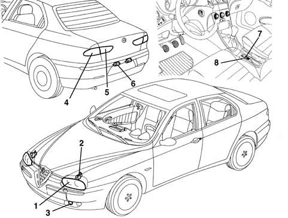
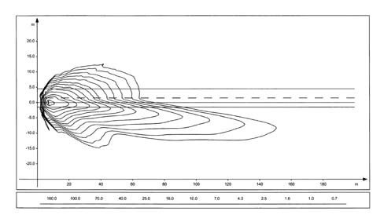
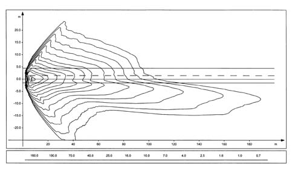
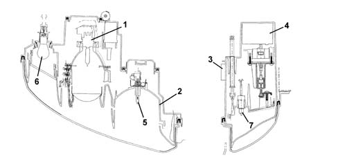
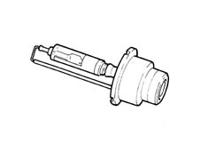
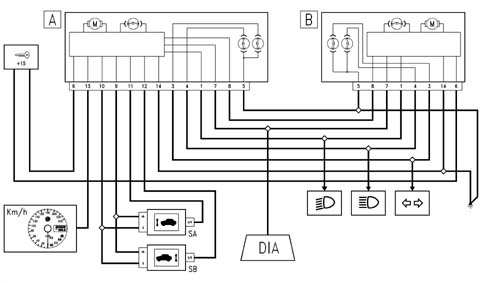
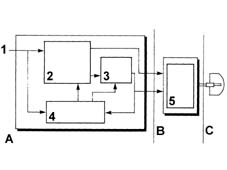
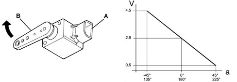
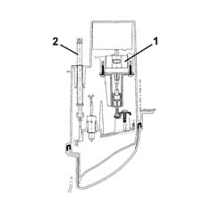

Introduction - EXTERIOR LIGHTING
- Path
- Descriptions > 55 ELECTRICAL EQUIPMENT > 5540 EXTERIOR LIGHTING > Introduction - EXTERIOR LIGHTING
- Kind
- system description
- Applies to
- all engines; all production periods
- Interactive page
- https://sloeber94.github.io/elrnDB-a156/en/#/3239230
Applies to: all engines; all production periods
The vehicle's exterior lighting system has been designed with two aims in mind:
- Ensuring maximum efficiency in terms of complying with international regulations which define the illumination specifications of the various components
- integration with the design of the vehicle so that the various components reflect the image.
The front light cluster includes the separate functions of dipped headlamp, main beam headlamp and side light as a single unit.
The clear element (refractor) is made out of one piece of plastic.
The rear light cluster reflectors are made from a metallic plastic material and their profile is designed for maximum light efficiency.
There is also an electrical device for adjusting the height of the light beam. The switch in the passenger compartment controls the actuators on the light clusters with four different settings which depend on the vehicle load.
The rear light clusters are divided into two distinct components: The outer light unit (side lights, brake lights, turn signals) is fastened to the body. the inner light unit (fog lamps, rear fog lamps) is secured to the boot lid.

1, Front headlamp 2, Headlamp adjustment motor 3, Fog light 4, Outer tail-light 5, Inner tail-light 6, Number plate light 7, Fog lamp switch 8, Rear fog lamp switch
Applies to: all engines; all production periods; only with equipment: Xenon Gas headlamps
SPECIFICATIONS:
GAS DISCHARGE HEADLAMPS
Introduction
The lights play an important role among the vehicle's active safety systems.
The need to improve the performance of current systems, based on halogen lamps, in terms of light energy emitted, spectral range and bulb duration has led to the technological development of gas discharge headlamps and the relevant devices which permit their operation on the vehicle.
Three main advantages have resulted from the development of this technology:
- more efficient brightness permits a reduction in electrical energy when in steady state;
- the high light emission allows the size of the lights cluster to be reduced (particularly the height) offering greater freedom of design of the front;
- on average, the life is double that of a halogen bulb.
The gas discharge headlamp technology has led to the development of a set of devices which, in short, comprise:
- xenon bulb;
- reflecting surface of the headlamp;
- control electronics, consisting of a reactor (igniter) and control unit (ballast);
- automatic light beam adjustment
Light beam (isolux curve) of conventional headlamp

Light beam (isolux curve) of discharge headlamp

COMPLETE LIGHTS CLUSTER
Each lights cluster contains the components necessary for the operation of the discharge lamp (bulb, reactor, control unit, control motor); the conventional components are also present (side lights, direction indicators, main beam).
Cross section of headlamp showing the gas discharge bulb

1 - Gas discharge bulb 2 - Reflective surface 3 - Control device (ballast) 4 - Igniter 5 - Main beam bulb 6 - Direction indicator bulb 7 - Side light bulb
XENON LAMP
The xenon lamp comprises a bulb containing two electrodes a few millimetres apart, and filled with xenon gas at low pressure.
The emission of light is brought about by the striking up of an arc between the two electrodes, which is maintained during the operation of the bulb; this process is similar to what happens in neon tubes in civil applications.
Unlike neon tubes, however, in an automobile application, however, it is unthinkable to have to wait for some minutes before the process stabilises, so the lights cluster has an electronic control device which permits operation, with regard to warm-up time, comparable to conventional headlamps.

REFLECTIVE SURFACE
The xenon bulb requires a new reflective surface, as the light emission point is shaped and positioned differently compared to the halogen bulb.
The reflector used is of the complex surface type, so with no spherical lens. This surface receives light beams coming from the bulb and orientates them so as to provide a correct light beam distribution.
Control electronics
Each bulb is controlled by electronics consisting of two devices: the control unit (ballast) and ignition reactor (igniter).
The purpose of the ballast is to convert the low-voltage direct current coming from the vehicle's battery into medium-voltage alternating current, and to control the subsystem's operation in closed loop.
The ballast is thus able to control in an optimum way the characteristic voltage-current in the ignition stage, and can deliver to the bulb the power required to for operation in steady state.
The igniter is controlled by the ballast and can generate the high voltage (max 25 kV) necessary for striking up the arc between the electrodes.
The ballast in the left headlamp acts as 'MASTER': it receives the signals from the sensors, processes them and re-transmits them also the ballast of the right 'SLAVE' headlamp.
Wiring diagram
The figure shows a general diagram of the electrical connections

A, MASTER headlamp B, SLAVE headlamp Sa, Front sensor Sb, Rear sensor DIA, Diagnostic socket
Operation
The operation of a xenon bulb is divided into four phases
Ignition
In this stage, the ballast generates a voltage which can strike up a specific device located in the igniter. A voltage step-up circuit transfers the overvoltage, suitably amplified, to the lamp, thus causing a discharge between the electrodes.
Maintaining the arc (take-over)
During this stage (a few seconds), the bulb is supplied with extra power which is necessary to cause the rapid evaporation of the metallic halides contained in the bulb, so as to quickly reach the brightness steady state. Under these conditions, the lamp emits a flash of light of double the normal intensity for a period of about 100 microseconds.
Warm-up
For a period of about two minutes, the ballast regulates the light intensity by measuring the physical state of the bulb from its impedance characteristics (closed-loop check).
Steady state
The light beam is continuously checked in closed loop even in steady state conditions.

1 - Supply (12 V) 2 - High-voltage generator 3 - Square-wave generator 4 - CPU 5 - Voltage step-up circuit A. Ballast B. Igniter C. Bulb
Automatic headlamp alignment adjuster
Because of the brightness of the beam emitted by the bulb, the vehicle must have an automatic headlamp alignment adjuster to avoid dazzling oncoming vehicles because of changes in alignment. The device intervenes in certain conditions:
- static type, due to load distribution;
- dynamic type, due to acceleration and deceleration.
The automatic adjuster also ensures greater driving comfort, as the lit area remains stable and the eye does not have to constantly adapt to variations in illumination.
The device comprises:
- a stepper motor for each headlamp;
- two load sensors, connected to the front and rear suspension, right side.
Adjustment
This is achieved via the signal of the load sensors which, connected to the suspension, give an indication of the vehicle's load condition.
The control unit is 'activated' whenever the ignition is turned ON and resets the headlamps to the corrrect hight (calculated in relation to the vehicle load), which consists of the full tilting and subsequent positioning of the reflector.
The signals of the load sensors are periodically acquired and suitably averaged so as to proceed, if necessary, with an adjustment of the headlamp position (e.g. fuel consumption during driving). This adjustment is not immediate, but is filtered over time to avoid unwanted adjustments (e.g. potholes, rough road surface, etc.).
This adjustment is also carried out when the lights are off, so that the beam is correctly positioned the moment when the lights are switched on.
Load sensors
The sensors are fixed to the vehicle body, while an appropriately shaped lever follows the movement of the suspension.
The sensor is supplied by the headlamp control unit, and supplies as an output a linear signal proportional to the position of the suspension in relation to the body.

A - Part secured to the body B - Part secured to the suspension lever a - Angle of inclination of the lever V - Voltage of sensor's output signal
Adjustment actuator
A stepper actuator inside the lights cluster carries out the adjustment. This consists of a stepper motor and a screw-nutscrew reduction gear, which transforms from rotary into linear the motion of a pushrod hinged via a spherical ball to the reflective surface.

1 - Stepper motor 2 - Manual headlamp adjuster
Self-testing
The electronics which manage the system include a self-test function which continuously checks its operation.
The control unit carries out a continuous self-test of the system's operation. In particular, it detects and memorises any faults.
Faults stored in the control unit memory can be analysed by the Examiner or other diagnostic instruments.
Recovery
The self-test management logic also has the 'recovery' function: if errors are detected, the system no longer works correctly, and so incorrect orientation of the light beam could dangerously dazzle other vehicles.
The light beam is then positioned low so it cannot dazzle under any circumstances, but permits sufficient illumination for safe driving to a garage on the Service Network.
Resetting
In the case of replacement of a component in the system (headlamp, sensor, etc.), it is necessary to connect up the diagnostic instruments and carry out a self-learning procedure, to automatically reset the system, which must recognise the headlamp correctly algined position (position '0') from which it must make the appropriate adjustments.